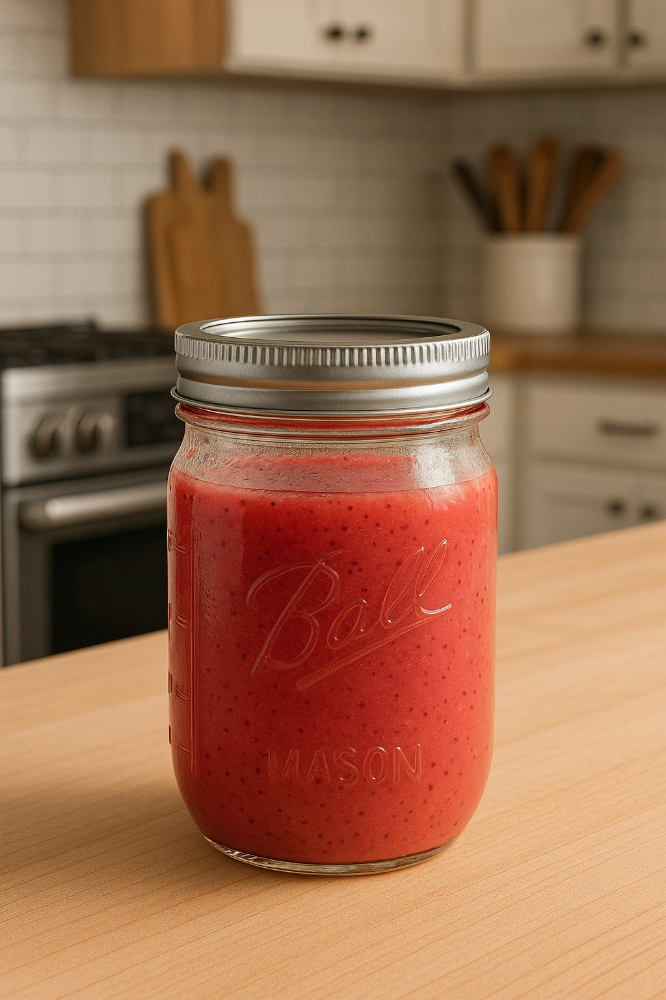
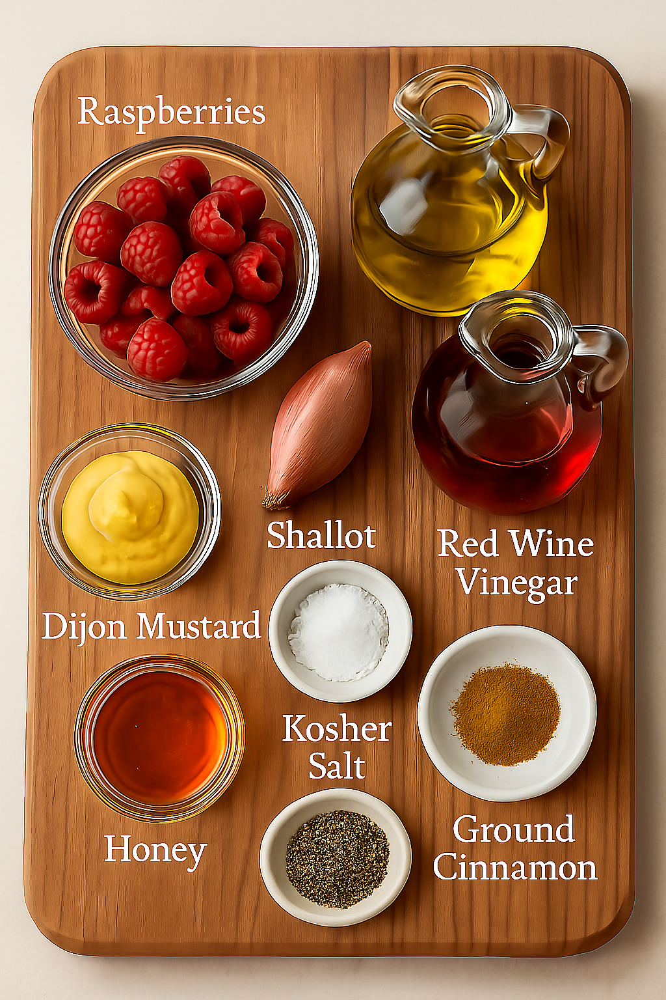

Home
Raspberry Vinaigrette

Raspberry vinaigrette is a tangy and slightly sweet salad dressing made with ingredients like raspberries
(fresh or puréed), vinegar (often red wine or balsamic), oil (typically olive oil), and seasonings such
as honey, mustard, or herbs. It's commonly used to add a fruity, vibrant flavor to green salads, especially
those with nuts, cheese, or fruit.
Ingredients
- Raspberries (fresh or frozen)
- Extra Virgin Olive Oil
- Honey
- Red Wine Vinegar
- Small Shallot
- Dijon Mustard
- Kosher Salt
- Ground Black Pepper
- Ground Cinnamon

Steps
- Combine all ingredients, except for the oil. Start the blender and let the ingredients blend
- While the Blender is going slowly start pouring the oil in a constant and steady stream. Wait until
emulsified.